Capitolo 14. Hardware
14.1 Processori
14.1.1) Come si comporta il processore AMD K6 con Linux?
Il K6 III sembra avere dei problemi con i kernel 2.0.x e i primi 2.2.x.
14.2 Monitor
14.2.1) Come si può impostare il risparmio energetico per il monitor?
Occorre inserire nel file ~/.xinitrc, prima della riga deputata al caricamento del gestore delle finestre, le righe:
xset dpms 420 540 900 xset +dpms
14.3 Dispositivi video (scheda, telecamera, ecc.)
14.3.1) Sono supportate le schede TV e le schede di acquisizione video in GNU/Linux?
Attualmente le schede TV con i chipset BT8xx sono quasi tutte compatibili.
Per informazioni sui driver BTTV, fare riferimento alla pagina: <http://www.metzlerbros.de/bttv.html>
Tra i programmi per vedere la televisione e catturare le immagini troviamo XawTV (1) reperibile presso <http://bytesex.org/xawtv/index.html>.
Ovviamente la risoluzione che offrono è quella di uno schermo TV
Sul fronte delle schede Matrox sono nati dei progetti che stanno dando ottimi risultati. Per la Rainbow Runner infatti si possono usare i driver scaricabili dal sito <http://www.cis.ohio-state.edu/~cmcurtin/dvd/mgavideo/>.
Per quello che la riguarda la Marvel si possono avere informazioni al sito: <ftp://ftp.rwii.com/pub/linux/system/Meteor/meteorman.html>.
Esistono anche progetti (che stanno portando i loro frutti) per schede di qualità superiore. Per le schede Mirò DC1 e DC1Plus le informazioni sono reperibili presso: <http://www.net4you.net/users/scherr/dc1plus/index.html>. Per la DC30: <http://stud3.tuwien.ac.at/~e8125426/dc30/>.
Anche per Iomega BUZZ esistono i driver: <http://www.lysator.liu.se/~gz/buz/>.
Esiste poi un hardware dedicato a GNU/Linux: la scheda LML33 prodotto da LinuxMedialabs: < http://www.linuxmedialabs.com/>.
Per maggiori dettagli sui driver per la cattura dei fotogrammi occorre tenere sott'occhio il sito: <http://www.atlantek.com.au/>.
Tutti i progetti sono raccolti nel Video4Linux: <http://roadrunner.swansea.uk.linux.org/v4l.shtml>.
Da tenere sotto controllo gli sviluppi di Trinity (licenza: GPL) <http://members.nbci.com/NicholasF/"> e >Vstream (licenza: GPL) <http://www.ee.up.ac.za/~justin/bttv/>
Per chi ha bisogno di sottotitolare i propri film, è possibile utilizzare b@k@sub (licenza: GPL) reperibile presso: <http://www.allusion.net/bakasub/>.
14.3.2) Si può utilizzare la scheda video Matrox G200 AGP in GNU/Linux?
Per la scheda video Matrox G200, nelle versioni da 8 e da 16 Mibyte di RAM, occorre aprire il file /etc/X11/XF86Config (se non risiede in questa directory cercalo nel file system perché purtroppo la sua posizione varia da distribuzione a distrubuzione) ed inserire questa sezione:
Section "Device"
Identifier "G200"
VendorName "Matrox"
BoardName "AGP"
VideoRam 8192
EndSection
14.3.3) Si può utilizzare la scheda video SiS 6326 in GNU/Linux?
La scheda SiS 6326 è gestita solo al 50% delle possibilità almeno fino all'XFree86 3.3.5. Per gestire questa scheda in maniera opportuna bisogna aggiungere in XF86Config, nella sezione Device:
Section "Device"
Identifier "Silicon Integrated Systems [SiS]|86C326"
VendorName "Unknown"
BoardName "Unknown"
#VideoRam 4096
Option "no_accel"
Option "sw_cursor"
Option "no_imageblt"
# Option "no_bitblt"
Option "fast_vram"
Option "pci_burst_on"
EndSection
Qualora si riscontrassero problemi, si proverà a eliminare il commento (#) davanti a no_bitblt.
14.4 Tastiera
14.4.1) Come si possono utilizzare i tasti accessori della tastiera in GNU/Linux?
Alcune tastiere dispongono di parecchi tasti aggiuntivi. In ambiente MS-Windows parte di questi tasti servono per controllare l'audio e il CD-ROM. Altri sono programmabili per potere avviare determinati programmi.
Con:
# showkey -k[Invio]
è possibile controllare quali tasti sono già associati a un codice tasto: premendo i vari pulsanti è possibile rilevare il numero decimale corrispondente(2).
Se alcuni tasti non restituiscono il codice, occorrerà ripetere l'operazione con:
# showkey -s[Invio]
I tasti accessori di MS-Windows infatti risultano in genere assegnati a 125, 126, 127, mentre i tasti aggiuntivi (sole nascente, mezza luna, e accensione) sono generalmente muti. Con showkey -s si possono ottenere invece da questi ultimi tasti i seguenti valori:
0xe0 0x63 0xe0 0xe3
per la pressione e rilascio del tasto col sole nascente,
0xe0 0x5f 0xe0 0xdf
per la pressione e rilascio del tasto con la mezza luna,
0xe0 0x5e 0xe0 0xde
per la pressione e rilascio del tasto col simbolo di accensione.
Per assegnare un codice a tali tasti, si impartirà il comando:
# setkeycodes scancode keycode[Invio]
Es.:
# setkeycodes e063 122[Invio]
Attenzione: non si deve utilizzare una mappa della tastiera già utilizzata. Meglio controllare prima l'organizzazione della tastiera attiva.
Si procederà poi a modificare la mappa della tastiera per assegnare le funzioni che desiderate ai nuovi tasti. Si possono anche inserire delle stringhe contenenti i comandi da eseguire. Se ad esempio si desidera spegnere la macchina col tasto accensione, si dovrà modificare il file /etc/kbd/default.map.gz (o il file relativo alla mappa della tastiera utilizzata nella propria distribuzione) nel seguente modo:
[...] keycode 124 = F69 [...]
e più avanti:
[...] string F69 = "shutdown -h 1 &\n" [...]
è stato inserito un ritardo di un minuto in modo da avere il tempo di cancellare il processo di spegnimento della macchina in caso di pressioni accidentali. Basterà spegnere il monitor e andarsene, se è attivo il supporto per la gestione avanzata dell'alimentazione (APM) nel kernel.
N.B.: si devono concludere le stringhe con «\n». Con questa procedura la pressione di un tasto speciale viene interpretata come la battitura della stringa corrispondente, e come per ogni comando, è necessario impartire anche il ritorno carrello (invio).
14.4.2) Come si imposta la tastiera italiana?
Ecco i passaggi da seguire per impostare la tastiera italiana nella propria macchina. Occorre innanzitutto posizionarsi all'interno della directory /usr/lib/kbd/keymaps/:
# cd /usr/lib/kbd/keymaps[Invio]
qui sono presenti diverse sottodirectory (a seconda della piattaforma di utilizzo). Occorre posizionarsi nella directory corrispondente alla propria piattaforma. Nel caso di piattaforma Intel la directory sarà i386:
# cd i386[Invio]
In questa directory è presente un'ulteriore struttura che presenta tante sottodirectory quanti sono i modelli di tastiera. In genere, il modello più diffuso è qwerty(3).
# cd qwerty[Invio]
a questo punto, tramite il comando:
# ls it*[Invio]
è possibile verificare che esista il file di configurazione corrispondente alla lingua italiana. Le scelte dovrebbero in genere ricadere tra it-ibm.kmap.gz, it.kmap.gz e it2.kmap.gz. Di solito it.kmap.gz dovrebbe andar bene, salvo casi particolari. Per installare tale tipo di tastiera, eseguire il comando:
# loadkeys it[Invio]
che restituirà il seguente output:
Loading it.kmap.gz
Se volessimo verificare l'impostazione della tastiera si potrà usare il comando dumpkeys:
# dumpkeys[Invio]
o meglio, redirigere l'output di tale comando in un file, visto che è piuttosto prolisso:
# dumpkeys > tastiera.txt [Invio](4)
questi passi dovrebbero consentire di configurare la tastiera per la console testuale.
Per X si dovrà modificare il file /etc/X11/Xf86Setup.
14.4.3) Come si impostano le tastiere estere?
Qualcuno sa come impostare le tastiera estere?
La tastiera si imposta con:
# loadkeys nome-file[Invio]
dove nome-file è il file di mappa della tastiera, normalmente reperibile nella directory /usr/share/keytables/ o in /usr/share/keymaps/. Tali file hanno estensione .map o .kmap o .kmap.gz e hanno un nome abbastanza significativo, tipo it.map, it2.map, us.kmap.gz, us-latin1.kmap.gz, ecc.
14.4.4) È possibile generare i caratteri accentati su una tastiera statunitense?
Per quanto riguarda X la cosa è molto semplice, basta modificare il file /etc/X11/XF86Config (v. 3.3.x) mettendo la riga:
XkbLauout "us_intl"
Ecco un esempio di file:
Section "Keyboard"
Protocol "Standard"
AutoRepeat 500 30
LeftAlt Meta
RightAlt Meta
ScrollLock Compose
RightCtl Control
XkbKeycodes "xfree86"
XkbTypes "default"
XkbCompat "default"
XkbSymbols "us(pc102)"
XkbGeometry "pc"
XkbRules "xfree86"
XkbModel "pc102"
XkbLayout "us_intl"
EndSection
Per quanto riguarda il terminale si può risolvere il problema utilizzando il file us-acent.kmap.gz.(5). Con questa configurazione infatti se si vuole fare il carattere «è» basterà premere in sequenza [`] ed [e]. Non si è limitati inoltre ai caratteri accentati minuscoli ma è possibile generare:
-
«È» tramite la combinazione ['] ed [E]
-
«È» tramite la combinazione ['] ed [E]
-
«ë» tramite la combinazione ["] ed [e]
-
«ã» tramite la combinazione [~] ed [a]
14.5 Mouse
14.5.1) Come si configura un mouse PS/2?
Il dispositivo per il mouse PS/2 è /dev/psaux al contrario dei dispositivi seriali che sono generalmente /dev/ttySx (6).
Segue una porzione del file XF86Config (X 3.3.x) che indica che si dispone di un mouse di tipo PS/2.
Section "Pointer"
Device "/dev/psaux"
Protocol "PS/2"
Emulate3Buttons
ZAxisMapping 4 5
EndSection
Segue una porzione del file XF86Config-4 (X 4.0.3) che indica che si dispone di un mouse di tipo PS/2.
Section "InputDevice"
Identifier "Mouse0"
Driver "mouse"
Option "Protocol" "PS/2"
Option "Device" "/dev/mouse"
Option "Emulate3Buttons" "yes"
EndSection
/dev/mouse è un collegamento simbolico a /dev/psaux. Si può inserire direttamente tale file oppure creare il collegamento simbolico.
14.5.2) Come si abilita l'utilizzo della rotellina del mouse?
Occorre utilizzare imwheel (7). La pagina di tale programma è <http://jonatkins.org/imwheel/>. Il programma ora è in una forma sufficientemente stabile.
Una volta installato l'eseguibile dovrà essere modificato il file di configurazione di X. La sezione Pointer in /etc/X11/XF86Config dovrà essere simile alla seguente:
Section "Pointer"
Protocol "IntelliMouse"
Device "/dev/mouse"
ZAxisMapping 4 5
# When using XQUEUE, comment out the above two lines, and uncomment
# the following line.
# Protocol "Xqueue"
# Baudrate and SampleRate are only for some Logitech mice
# BaudRate 9600
# SampleRate 150
# Emulate3Buttons is an option for 2-button Microsoft mice
# Emulate3Timeout is the timeout in milliseconds (default is 50ms)
# Emulate3Buttons
# Emulate3Timeout 50
# ChordMiddle is an option for some 3-button Logitech mice
# ChordMiddle
EndSection
14.6 Disco fisso
14.6.1) Perché i controller UltraATA non vengono riconosciuti?
Se dovessero comparire messaggi di errore relativi all'interfaccia IDE/EIDE durante l'installazione di una distribuzione GNU/Linux, si deve ricordare che i dischi UltraDMA 66 (detti anche UltraATA) utilizzano un controller speciale che permette una velocità di trasferimento di picco di 66 Mibyte/s, (HPT366). I kernel della serie 2.2.x non gestiscono questa caratteristica. Bisogna quindi utilizzare il kernel 2.4.x o i kernel sperimentali (l'HPT366 è supportato dalla versione 2.3.12).
Ne va da sé che tentando di installare una distribuzione che abbia un kernel obsoleto su di un disco UltraATA 66, questa operazione risulterà non possibile.
14.7 CD-ROM e masterizzatori
14.7.1) Come si configura un CD-ROM esterno parallelo in GNU/Linux?
Occorrerà fare un collegamento simbolico che fa puntare /dev/cdrom alla porta /dev/tty?? della parallela.
14.7.2) Perché ho problemi con il CD-ROM all'avvio del server X?
Se all'atto di lanciare il server grafico si riscontrasse sulla console di avvio questo errore:
VFS: busy inodes on changed media. Atapi device hdd: Error : Not ready -- (Sense key = 0x02) (reserved error code) -- ( osc = 0x3a,ascq =0x02) The failed "Test unit Ready" packet command was: "00 00 00 00 00 00 00 00 00 00 00 00 "
Si dovrà provare a disabilitare l'utilità di auto montaggio in Gnome Control Center.
14.7.3) Come si configura un masterizzatore connesso all'interfaccia IDE/EIDE?
Occorre ricompilare il kernel con il supporto emulazione SCSI. All'atto di ricompilare il kernel si dovrà selezionare (con Y) nella sezione Block Devices l'opzione SCSI emulation support. Questo vale per i kernel della versione 2.2.x. Per quelli della versione 2.4.x l'opzione SCSI emulation support si trova nella sezione ATA/IDE/MFM/RLL support e poi in IDE, ATA and ATAPI Block devices come si vede in figura.
|
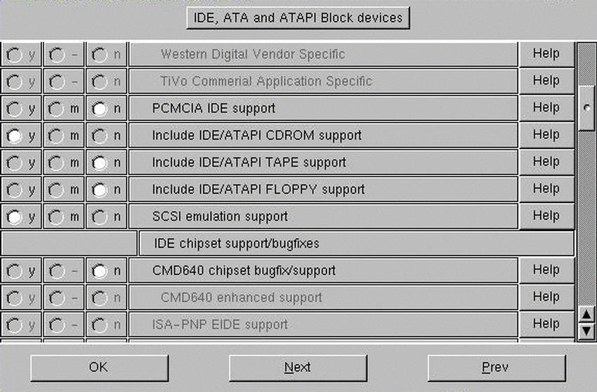 Figura 14.1. Il supporto per l'emulazione SCSI nei kernel 2.4.x. |
Selezionare poi dal menù principale SCSI support scegliendo (con Y), l'opzione SCSI generic support e SCSI CD-ROM support.
Salvare e compilare il kernel (se ovviamente gli altri parametri erano rimasti invariati). I CD-ROM connessi all'interfaccia IDE/EIDE verranno riconosciuti automaticamente. come periferiche SCSI e si dovrà modificare il file /etc/fstab di conseguenza. Dovrà risultare qualcosa del tipo:
/dev/scd0 /cdrom iso9660 ro,noauto,user 0 0
14.7.4) Qual è il nome del dispositivo generalmente associato a un masterizzatore connesso all'interfaccia IDE/EIDE?
Se il kernel riconosce il masterizzatore connesso all'interfaccia IDE/EIDE, si deve ricordare che il dispositivo che lo identifica è in genere/dev/hdn, dove n assume valori quali a, b, c, d, ecc. Dipende da dove è stato connesso, e segue la stessa regola dei dischi fissi:
-
prima interfaccia IDE/EIDE:
-
seconda interfaccia IDE/EIDE:
Se non si è a conoscenza di come è stato connesso, si effettuino tentativi tralasciando i dispositivi che corrispondono ai dischi fissi e al CD-ROM.
Es.: inserire un CD-ROM nel masterizzatore, creare la directory di innesto (mount):
# mkdir /mnt/masterizzatore[Invio]
Si provi ora a montare il CD-ROM presente nel masterizzatore:
# mount -t iso9660 /dev/hdb /mnt/masterizzatore[Invio]
se vengono segnalati errori, provare con un'altra lettera. Per provare a vedere il contenuto della directory principale del CD-ROM nel masterizzatore impartire il comando:
# ls -la /mnt/masterizzatore[Invio]
se la directory appare vuota, allora il CD non è stato montato.
14.7.5) Come si utilizza in GNU/Linux un masterizzatore SCSI?
Per fare riconoscere al kernel un masterizzatore SCSI, si dovranno includere le seguenti opzioni:
-
ATA/IDE/MFM/RLL support
-
Enhanced IDE/MFM/RLL
-
IDE Atapi cd rom
-
SCSI HostAdaptor emulation
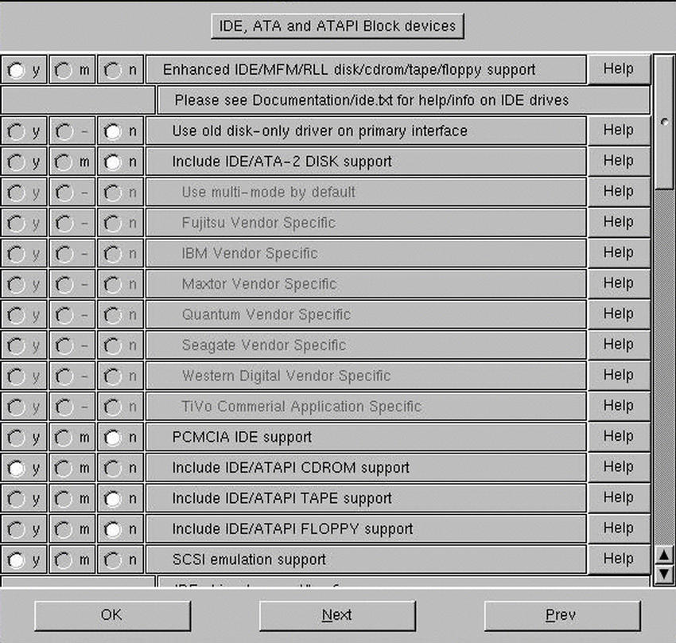
Figura 14.2. ATA/IDE/MFM/RLL support
-
-
Block devices
-
Loopback device
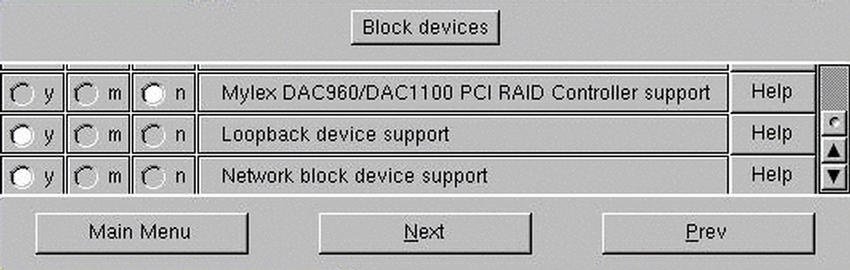
Figura 14.3. Block devices
-
-
SCSI support
-
SCSI support
-
SCSI cd rom support
-
Enable vendor specific
-
Scsi generic support

Figura 14.4. SCSI support
-
-
File systems
-
ISO 9660 cdrom filesystem
-
Microsoft Joliet
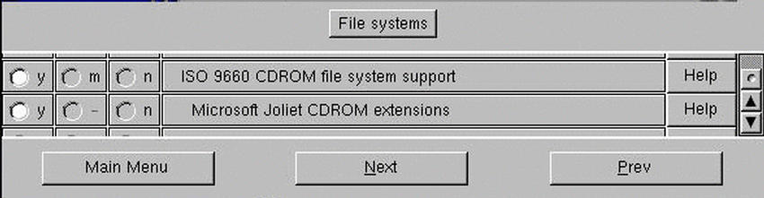
Figura 14.5. File systems
-
14.7.6) Qual è il nome del dispositivo generalmente associato a un masterizzatore SCSI?
Pare che il mio kernel abbia riconosciuto il mio masterizzatore SCSI ma ora come accedo? Quale è il nome del dispositivo? /dev/cosa?
Generalmente è uno dei dispositivi /dev/scdn dove n assume valori quali 0, 1, 2, 3, ecc..
Es.: inserire un CD-ROM nel masterizzatore, creare la directory di innesto (mount):
# mkdir /mnt/masterizzatore[Invio]
Si provi ora a montare il CD-ROM presente nel masterizzatore:
# mount -t iso9660 /dev/scd0 /mnt/masterizzatore[Invio]
se vengono segnalati errori, provare con un'altro numero. Per provare a vedere il contenuto della directory principale del CD-ROM nel masterizzatore impartire il comando:
# ls -la /mnt/masterizzatore[Invio]
se la directory appare vuota, allora il CD-ROM non è stato montato.
14.8 Schede di rete
14.8.1) Come si utilizzano schede di rete NE2000 compatibili in GNU/Linux?
Occorre dichiarare come modulo (M) o inserire in maniera monolitica (Y) il supporto per questa scheda all'interno del kernel. Si deve innanzitutto identificare se si tratta di una scheda ISA o PCI. Nella scelta delle opzioni da inserire all'interno del kernel, si dovrà selezionare nell'ambito di Network device support e nella fattispecie Ethernet (10 or 100 Mbit)
|
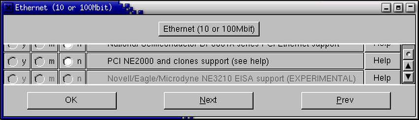 Figura 14.6. Selezionare una scheda di rete NE 2000 PCI |
|
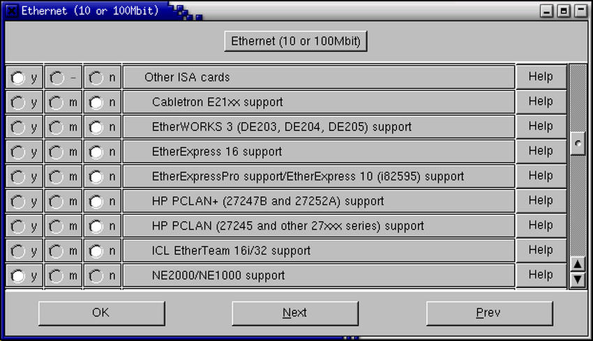 Figura 14.7. Selezionare una scheda di rete NE 2000 ISA |
Una volta ricompilato il kernel, se la scheda è di tipo PCI, si dovrà caricare il modulo relativo(8) con:
# modprobe ne2k-pci[Invio]
Se la scheda è ISA si dovrà dare il seguente comando:
# insmod ne io=0x300H[Invio]
inserendo l'indirizzo opportuno rilevabile tramite il software che di solito accompagna la scheda o tramite i ponticelli presenti sulla scheda stessa. Qualora si rilevino errori, si provi ad inserire prima il modulo 8310:
# insmod 8310[Invio]
14.9 Scheda audio
14.9.1) Come si fa a rilevare le schede audio Plug & Play in GNU/Linux?
Prima di tutto il kernel dovrà essere stato compilato con il supporto per i moduli OSS oltre che per quelli specifici della scheda in questione. Si devono inoltre innanzitutto scaricare gli eventuali moduli audio presenti in memoria, altrimenti il riconoscimento delle periferiche Plug & Play potrebbe venire compromesso.
Questa momentanea depurazione la si ottiene con il seguente script:
cat /proc/modules|gawk '/^uar/{print $1}'|xargs -i rmmod {}
cat /proc/modules|gawk '/^snd/{print $1}'|xargs -i rmmod {}
cat /proc/modules|gawk '/^opl/{print $1}'|xargs -i rmmod {}
cat /proc/modules|gawk '/^ad/{print $1}'|xargs -i rmmod {}
cat /proc/modules|gawk '/^sound/{print $1}'|xargs -i rmmod {}
cat /proc/modules|gawk '/^mpu/{print $1}'|xargs -i rmmod {}
cat /proc/modules|gawk '/^isa/{print $1}'|xargs -i rmmod {}
Una volta eseguito tale script, si deve creare il file isapnpNEW.conf per ottenere il file di configurazione generico delle periferiche Plug & Play(9). Il comando per ottenere tale file è:
# pnpdump --config > isapnpNEW.conf[Invio]
Una volta creato il file lo si potrà caricare mediante::
# isapnp isapnpNEW.conf[Invio]
Occorrerà poi inserire i moduli soundcore e sound con i seguenti comandi:
# insmod soundcore[Invio]
e:
# insmod sound[Invio]
Fatto questo dovrà essere inserito il modulo della scheda audio.
|
L'elenco dei moduli, le sequenze e le modalità di inserimento cambiano da scheda a scheda. Le indicazioni sono presenti in genere nei documenti della directory |
14.9.2) Come si fa a rilevare una scheda audio OPTi 82C931 presente su un alloggiamento ISA?
La scheda funziona con i moduli OSS: occorre attivarla con Isapnptools e inserire i moduli nel corretto ordine. Si consiglia di fare riferimento alla documentazione presente nella directory di documentazione del kernel (/usr/src/linux/Documentation/sound/Opti).
Innanzitutto si consiglia di utilizzare almeno isapnptools-1.13 o superiore. Mediante pnpdump si rileveranno le informazioni della scheda. Il risultato di questa rilevazione dovrà essere modificato al fine di evidenziare ed utilizzare le opzioni che interessano. Una volta modificato, il file verrà generalmente installato come /etc/isapnp.conf.
Segue una porzione del file /etc/conf.modules che permette il funzionamento di questa scheda:
alias mixer0 mad16 alias audio0 mad16 alias midi0 mad16 alias synth0 opl3 options sb mad16=1 options mad16 irq=10 dma=0 dma16=1 io=0x530 joystick=1 cdtype=0 options opl3 io=0x388 post-install mad16 /sbin/ad1848_mixer_reroute 14 8 15 3 16 6
Occorrerà impostare i corretti valori degli indirizzi.
14.9.3) Come si fa ad utilizzare una scheda audio Sound Blaster Live! con GNU/Linux?
I possessori della scheda audio Sound Blaster Live! potranno utilizzare normalmente la scheda con un kernel di versione 2.4.x o superiore.
|
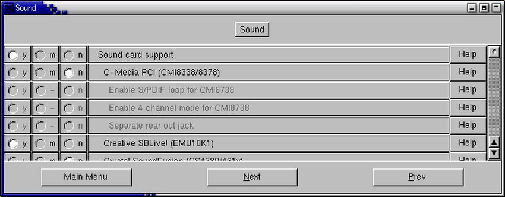 Figura 14.8. Inserimento del supporto per la Sound Blaster Live! all'atto della ricompilazione del kernel |
Gli utenti che disponessero di un kernel della serie 2.2.x potranno utilizzare il pacchetto emu10k1xxx.tar.gz(10) prelevabili dal sito della Creative Labs(11). In questo caso occorrerà attenersi alle indicazioni del file README allegate al pacchetto.
14.9.4) Perché il sistema restituisce un errore di device busy relativo alla SoundBlaster PCI 128?
Qualora si verificasse un errore del genere si consiglia di includere il supporto di tale scheda in maniera monolitica e non come modulo. Inoltre si consiglia di verificare se gli irq della scheda non sia in conflitto con qualche altro dispositivo (la porta parallela ad esempio).
14.9.5) Come si configura una SoundBlaster PCI 64V in GNU/Linux?
Si deve inserire il supporto per le seguenti componenti nel kernel:
Nella sezione Sound si dovranno abilitare le seguenti opzioni (12):
-
Sound card support
-
Ensoniq AudioPCI (ES1370) o Creative Ensoniq AudioPCI97 (ES1371)
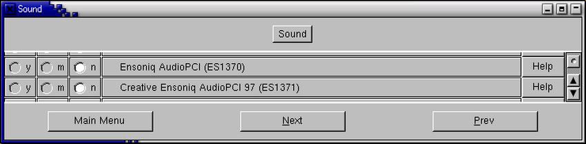
Figura 14.9. Inserimento del supporto per la SoundBlaster> PCI 64V all'atto della ricompilazione del kernel
-
OSS sound modules
-
100% Sound Blaster compatibles (SB16/32/64, ESS, Jazz16) support
-
AWE32 synth(13)
-
Generic OPL2/OPL3 FM synthesizer support
-
FM synthesizer (YM3812/OPL-3) support
14.9.6) Come si configura una scheda audio Yamaha OPL3-SAx in GNU/Linux?
Incluso il supporto per la scheda in questione nel kernel, si dovrà utilizzare Isapnptools (controllare la LDR 14.9.1). Una volta creato il file di configurazione con Isapnptools, si daranno i seguenti comandi:
# modprobe mpu401[Invio]
# modprobe ad1848[Invio]
# modprobe opl3sa2 io=0x370 mss_io=0x530 mpu_io=0x330 irq=5 dma=0 dma2=1[Invio](14)
# modprobe opl3 io=0x388[Invio](15)
Per utilizzare invece questa scheda con ALSA si darà il seguente comando:
# modprobe snd-card-opl3sa2 snd_port=0x370 snd_wss_port=0x530 \ snd_midi_port=0x300 snd_fm_port=0x388 snd_irq=5 \ snd_dma1=0 snd_dma1_size=4 snd_dma2=1 snd_dma2_size=4[Invio](16)
# modprobe snd-pcm1-oss.o[Invio]
# modprobe snd-mixer-oss.o[Invio]
# aumix -L[Invio]
14.9.7) Come si configura una scheda Avance Logic ALS 110 in GNU/Linux?
Per utilizzare una scheda audio Avance Logic ALS 110 si dovrà disabilitare (tramite i commenti «#») il DMA 1 nel file di configurazione generato da Isapnptools. Eccone un esempio:
#/etc/als100.conf
(READPORT 0x020b)
(ISOLATE PRESERVE)
(IDENTIFY *)
(VERBOSITY 2)
(CONFLICT (IO FATAL)(IRQ FATAL)(DMA FATAL)(MEM FATAL)) # or WARNING
(CONFIGURE ALS0110/-1 (LD 0
(IO 0 (BASE 0x220))
(INT 0 (IRQ 5 (MODE +E)))
(DMA 0 (CHANNEL 0))
# (DMA 1 (CHANNEL 0))
# volutamente commentato per conflitto dma
(NAME "ALS0110/-1[0]{PnP Sound Chip }")
(ACT Y)
))
(CONFIGURE ALS0110/-1 (LD 1
(NAME "ALS0110/-1[1]{PnP Sound Chip }")
(ACT Y)
))
(CONFIGURE ALS0110/-1 (LD 2
(NAME "ALS0110/-1[2]{PnP Sound Chip }")
(ACT Y)
))
(CONFIGURE ALS0110/-1 (LD 3
(INT 0 (IRQ 9 (MODE +E)))
(NAME "ALS0110/-1[3]{PnP Sound Chip }")
(ACT Y)
))
(WAITFORKEY)
Si dovranno commenta le righe di /etc/conf.modules e rimuovere i moduli audio caricati. In seguito si darà il seguente comando:
# isapnp /etc/als100.conf[Invio](17)
L'output dovrebbe essere simile al seguente:
Board 1 has Identity a3 ff ff ff ff 10 01 93 05: ALS0110 Serial No -1
[checksum a3]
ALS0110/-1[0]{PnP Sound Chip }: Port 0x220; IRQ5 DMA0 --- Enabled OK
ALS0110/-1[1]{PnP Sound Chip }: --- Enabled OK
ALS0110/-1[2]{PnP Sound Chip }: --- Enabled OK
ALS0110/-1[3]{PnP Sound Chip }: IRQ9 --- Enabled OK
In seguito si provvederà ad inserire i moduli sound, uart401 e sb come descritto in /usr/src/linux/sound.
14.9.8) Come si configura una scheda Plug & Play 16 bit ISA SoundBlaster compatibile in GNU/Linux?
Qualora si disponga di una scheda 16 bit ISA SoundBlaster compatibile, si dovrà inserire all'interno del file /etc/conf.modules le seguenti righe deputate a caricamento dei moduli necessari:
alias sound sb pre-install sound insmod sound dmabuf=1 alias midi opl3 options opl3 io=0x388 options sb io=0x220 irq=5 dma=1 dma16=5 mpu_io=0x330
nel file /etc/modules va inserita solamente la riga:
auto
Ovviamente il kernel dovrà essere ricompilato prestando attenzione che nella sezione Loadable module support tutte e tre le opzioni siano abilitate. Gli indirizzi dovranno inoltre essere quelli corretti.
14.9.9) Come si fa riconoscere al sistema una scheda audio SoundBlaster 16 Plug & Play?
Per utilizzare la scheda audio SoundBlaster 16 Vibra Plug & Play, si dovranno seguire innanzitutto le istruzioni preliminari presenti nella LDR 14.9.1 fino al punto in cui viene caricato con isapnp il file creato da Isapnptools.
In seguito si daranno i seguenti comandi:
# modprobe sound[Invio]
# insmod uart401[Invio]
# insmod sb io=0x220 irq=5 dma=1 dma16=7[Invio](18)
Ecco un estratto del file /usr/src/linux/Documentation/sound/Soundblaster:
modprobe sound insmod uart401 insmod sb ... This loads the driver for the Sound Blaster and assorted clones. Cards that are covered by other drivers should not be using this driver. The Sound Blaster module takes the following arguments io I/O address of the Sound Blaster chip (0x220,0x240,0x260,0x280) irq IRQ of the Sound Blaster chip (5,7,9,10) dma 8-bit DMA channel for the Sound Blaster (0,1,3) dma16 16-bit DMA channel for SB16 and equivalent cards (5,6,7) mpu_io I/O for MPU chip if present (0x300,0x330)
14.9.10) Come si configurano i driver ALSA per le schede audio SoundBlaster PCI 64V integrate su scheda madre?
Se si dispone di una scheda audio SoundBlaster PCI 64V, integrata su scheda madre, che non si riesce a far funzionare, sarebbe opportuno provare con i driver ALSA. Per fare questo, si dovrà ricompilare il kernel con il solo supporto del suono, senza alcun driver specifico. Si dovranno inoltre installare i driver ALSA, e modificare opportunamente il file /etc/conf.modules inserendo:
alias char-major-116 snd
alias snd-card-0 snd-card-ens-1371
alias char-major-14 soundcore
alias sound-slot-0 snd-card-0
alias sound-service-0-0 snd-mixer-oss
alias snd-service-0-1 snd-seq-oss
alias snd-service-0-3 snd-pcm1-oss
Una volta riavviato il sistema con queste modifiche all'atto di eseguire il comando:
# cat /proc/modules[Invio]
si dovrà ottenere qualcosa del genere:
snd-pcm1-oss 13260 0 (autoclean) snd-card-ens1371 2332 0 (autoclean) snd-ens1371 7824 0 (autoclean) [snd-card-ens1371] snd-pcm1 18108 0 (autoclean) [snd-pcm1-oss snd-ens1371] snd-timer 8380 0 (autoclean) [snd-pcm1] snd-ac97-codec 20384 0 (autoclean) [snd-ens1371] snd-mixer 26688 0 (autoclean) [...] snd-midi 13388 0 (autoclean) [...] snd-seq-device 3136 1 (autoclean) [...] snd-pcm 8812 0 (autoclean) [...] snd 34880 1 (autoclean) [...]
Oltre a questo controllo, anche il comando:
# cat /proc/asound/cards[Invio]
dovrebbe restituire qualcosa di simile a:
0 [card1 ]: AudioPCI - Ensoniq AudioPCI
Ensoniq AudioPCI ES1371 at 0xe400, irq 11
Occorre infine ricordare che ora il volume è impostato come muto. Fare riferimento alla LDR 11.1.2 per risolvere il problema.
14.10 Lettori ZIP
14.10.1) Quale è il nome del dispositivo comunemente associato ad un lettore Iomega ZIP ATAPI installato sul canale master della seconda interfaccia IDE/EIDE?
Il lettore ZIP in questione è generalmente associato al dispositivo /dev/hdc4. Esso potrà essere montato mediante il seguente comando:
# mount -t ext2 /dev/hdc4 /zip/[Invio](19)
14.10.2) Come si deve configurare il sistema per far riconoscere un lettore ZIP collegato alla porta parallela?
In genere un lettore ZIP collegato alla porta parallela, è associato al dispositivo di sistema /dev/sda4. Prima però di poterlo utilizzare, si dovrà ricompilare il kernel con le opzioni adatte a poterlo gestire. Ecco cosa includere:
Nella sezione SCSI support:
SCSI support: Yes SCSI disk support: Yes
Nella sezione SCSI low-level drivers si dovrà scegliere tra:
IOMEGA parallel port (ppa - older drives): Yes
se si dispone di un lettore vecchio oppure:
IOMEGA parallel port (imm - newer drives): Yes
se si dispone di un lettore nuovo o dello ZIP Plus. In genere se sul cavo fornito dal produttore compare la scritta AutoDetect, si dovrà utilizzare quest'ultima opzione.
All'interno della sezione Character devices si dovrà selezionare invece:
Parallel printer support: Yes
Dopo aver selezionato queste opzioni, sarà necessario ricompilare il kernel. All'avvio con l'immagine ricompilata si dovrà verificare se il lettore ZIP è stato riconosciuto. Se i messaggi di avvio scorrono troppo velocemente, si possono visualizzare in seguito mediante il comando dmesg:
# dmesg | less[Invio]
Se il lettore è stato riconosciuto si proverà ad innestare un dischetto per prova:
# mount -t ext2 /dev/sda4 punto_innesto [Invio](20)
In questo caso si cercherà di innestare al file system principale a livello della directory indicata da punto_montaggio un dischetto ZIP con file system ext2.
Per ulteriori informazioni consultare lo ZIP-Drive mini HOWTO.
14.10.3) Quali sono le differenze tra i moduli ppa e imm dei drive ZIP?
All'atto di ricompilare il kernel per includere il supporto per il drive ZIP, si dovrà scegliere tra il modulo ppa e quello imm. Questi moduli si scelgono all'interno di SCSI support ed in particolare in SCSI low-level drivers.
|
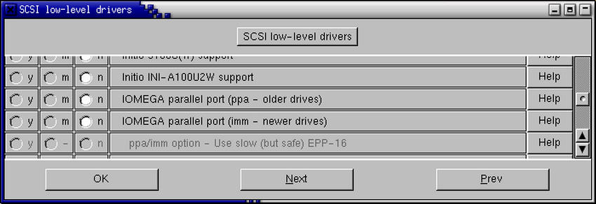 Figura 14.10. La scelta del tipo di unità ZIP. |
Si deve ricordare che se lo ZIP è installato su porta parallela, si dovrà prevedere anche il supporto per la parallela stessa. Si dovrà selezionare infatti anche all'interno di General setup il supporto per la porta parallela (Parallel port support e PC-style hardware).
In genere il dispositivo è /dev/sdb4.
14.11 Nastri
14.11.1) Come si utilizzano le unità a nastro DAT?
L'utilizzo di queste unità a nastro, avviene mediante il comando tar. Il dispositivo generalmente associato all'unità è /dev/nst0:
# tar cvvf /dev/nst0 file file directory[Invio](21)
Si ricordi che è possibile anche specificare la grandezza dei blocchi:
# tar cvvbf 64 /dev/nst0 file file directory[Invio]
Per riavvolgere il nastro si usa il comando mt. Se si utilizza sempre quel dispositivo, è possibile fare un collegamento simbolico:
# ln -s /dev/nst0 /dev/tape[Invio]
Gli altri comandi utilizzati frequentemente per gestire un'unità a nastro sono:
-
#mt rewi[Invio]che serve per riavvolgere il nastro;
-
#mt offl[Invio]che riavvolge ed espelle il nastro;
-
#mt fsf[Invio]avanza di un archivio;
-
#mt fsf n[Invio]avanza di n archivi;
-
#mt bsf[Invio]torna indietro di un archivio;
-
#mt bsf n[Invio]torna indietro di n archivi.
14.12 RAM
14.12.1) Quanta RAM è utilizzata e quanta è disponibile?
Per visualizzare quanta RAM viene utilizzata e quanta è disponibile si utilizzerà il comando free:
# free[Invio]
L'output del comando sarà simile al seguente:
bigpaul@linuxfaq.it:~/LDR$ free
total used free shared buffers cached
Mem: 126712 114520 12192 0 5920 55800
-/+ buffers/cache: 52800 73912
Swap: 136040 0 136040
bigpaul@linuxfaq.it:~/LDR$
Per sapere quanta RAM utilizza ogni singolo processo si utilizzerà top.
02:44:32 up 1:01, 2 users, load average: 0.00, 0.00, 0.00
55 processes: 53 sleeping, 2 running, 0 zombie, 0 stopped
CPU states: 0.4% user, 52.9% system, 0.0% nice, 46.7% idle
Mem: 126712K total, 114000K used, 12712K free, 5920K buffers
Swap: 136040K total, 0K used, 136040K free, 55836K cached
PID USER PRI NI SIZE RSS SHARE STAT %CPU %MEM TIME COMMAND
3 root 20 0 0 0 0 SW 52.3 0.0 48:03 kapm-idled
327 root 5 -10 20496 11M 2624 S < 0.5 9.1 0:25 XFree86
811 bigpaul 9 0 5088 5088 2012 S 0.1 4.0 0:06 wish
949 bigpaul 10 0 1072 1072 852 R 0.1 0.8 0:00 top
1 root 8 0 524 524 460 S 0.0 0.4 0:03 init
[...]
138 root 9 0 624 624 512 S 0.0 0.4 0:00 syslogd
141 root 9 0 1112 1112 436 S 0.0 0.8 0:00 klogd
157 root 9 0 668 668 512 S 0.0 0.5 0:00 cardmgr
164 root 9 0 548 548 480 S 0.0 0.4 0:00 inetd
170 root 9 0 600 600 508 S 0.0 0.4 0:00 lpd
14.12.2) Come si dichiara la quantità di RAM oltre le 64 Mibyte in proprio possesso?
Chi possiede più di 64 Mibyte di RAM, dovrà aggiungere nel file /etc/lilo.conf la seguente riga:
append = "mem=quantitaramM"
Es.: altre 64 Mibyte di RAM richiederanno la seguente riga:
append="mem=64M"
14.12.3) Perché la dichiarazione della quantità RAM superiore alle 64 Mibyte non funziona?
Se ad esempio si disponesse di 160 Mibyte aggiuntive, e la riga:
append="mem=96M"
restituisse errore (o non permettesse il riconoscimento della RAM), si dovrà controllare l'eventuale esistenza di una scheda video integrata nella scheda madre. Se così fosse vanno sottratte dalle 96 Mibyte, quelle che sono dedicate alla scheda video. Se la scheda video richiede 4 Mibyte, allora la riga sarà:
append="mem=92M"
14.12.4) Come si comporta il sistema se ci sono difetti nella RAM?
Se nel sistema c'è RAM difettosa, in corrispondenza di attività intensive (ad esempio la ricompilazione del kernel) il sistema restituirà un messaggio di:
SIGNAL 11
14.13 Scanner
14.13.1) Si può utilizzare uno scanner HP 6100C in GNU/Linux?
Se si dispone di un scanner HP 6100C, per farlo funzionare occorrerà modificare il file /usr/src/linux/drivers/scsi/scsi.c. In particolare occorre cercare le seguenti stringhe:
{"HP", "C1750A", "3226", BLIST_NOLUN}, /* scanjet iic */
{"HP", "C1790A", "", BLIST_NOLUN}, /* scanjet iip */
[1] {"HP", "C2500A", "", BLIST_NOLUN}, /* scanjet iicx */
ed aggiungere questa:
[2] {"HP", "C2520A", "3644", BLIST_NOLUN}, /* scanjet 6100C */
Queste informazioni sono tratte da MS-Windows. Una volta modificato il file scsi.c, si dovrà ricompilare il kernel.
Il comando:
# cdrecord -scanbus[Invio]
dovrebbe confermare il corretto funzionamento del dispositivo.
14.14 Modem
14.14.1) Si possono utilizzare i Win-modem in GNU/Linux?
I Win-modem(22) attualmente gestiti da Linux sono i Lucent LT Chipset CL-MD5620DT e PCTel. Ulteriori informazioni presso: <http://www.linmodems.org/>, <http://linmodems.org> e <http://www.geocities.com/SiliconValley/3217/Documents/WinModems.html>.
Questi modem sono costituiti da un processore DSP (Digital Signal Processor) che elabora i segnali in modo da renderli uguali a quelli generati o ricevuti da un modem normale. Per fare questo c'è bisogno di driver appropriati per funzionare e non ce ne sono sotto Linux, visto che le specifiche non vengono rese pubbliche.
14.14.2) Cosa si deve configurare per far riconoscere il modem al sistema?
Il modem non dovrebbe creare in genere problemi in Linux: la maggior parte dei modem sono Hayes compatibili, ossia hanno una serie di istruzioni codificate e come tali poco importa quale sia la casa costruttrice.
I problemi cominciano ad esserci qualora si utilizzino i Win-modem(23) Sono pochissimi i modelli supportati. Fare riferimento alla LDR 14.14.1 per ulteriori chiarimenti.
14.14.3) Come si configura il sistema per utilizzare un dispositivo US Robotics ISDN TA?
Prima di tutto occorre assicurarsi di avere avviato i seguenti moduli: ppp, shlc e bsd_comp. La configurazione è equivalente ad un normale ppp, le uniche cose da controllare sono, i moduli e le stringhe da inviare. Occorre verificare inoltre che non venga utilizzato in maniera predefinita l'hdlc ma l' async ppp to sync ppp.
14.15 Stampante
14.15.1) Quali sono le stampanti utilizzabili con GNU/Linux?
Un elenco completo delle stampanti utilizzabili con GNU/Linux è reperibile all'indirizzo <http://www.linuxprinting.org/printer_list.cgi>.
14.15.2) Come si può stampare con una HP Deskjet 720C?
Viene qui presentata una configurazione funzionante (non per il colore però) per stampare con una stampante HP Deskjet 720C. Il risultato è stato ottenuto mediante il pacchetto pbm2ppa scritto da Tim Norman. La stampa viene effettuata attraverso l'interfaccia PostScript presente in pbm2ppa. Ecco il file /etc/printcap che è stato utilizzato:
lp:\
:lp=/dev/lp1:\
:sd=/var/spool/lpd/lp:\
:lf=/var/spool/lpd/lp/log:\
:af=/var/spool/lpd/lp/acct:\
:if=/usr/local/bin/ps.if:\
:la:mx#0:\
:sh:sf:
Ecco anche il filtro ps.if:
#! /bin/sh gs -sDEVICE=pbmraw -q -dNOPAUSE -r600 -sOutputFile= - | \ /usr/local/bin/pbm2ppa - -
14.15.3)
Come si configura il file /etc/printcap se si utilizza una stampante Epson Stylus Color?
Qualora si disponga di una stampante Epson Stylus Color, si provi ad utilizzare il seguente file di configurazione /etc/printcap:
lp|Stylus 360 dpi
:sd=/var/spool/lpd/lp
:sh
:rw
:lp=/dev/lp0
:mx#0
:if=/etc/magicfilter/stylus_color_360dpi-filter
lp720|Stylus 720 dpi
:sd=/var/spool/lpd/lp720
:sh
:rw
:lp=/dev/lp0
:mx#0
:if=/etc/magicfilter/stylus_color_720dpi-filter
14.15.4) Cosa va impostato prima della ricompilazione del kernel per permettere al sistema di stampare?
Quali opzioni in quali sezioni vanno impostate durante la compilazione del kernel per far lavorare la stampante? Devo per caso, dopo la compilazione, modificare LILO per passare parametri speciali al kernel, oppure aggiungere qualche riga allo stesso?
Per i kernel della serie 2.0.x è sufficiente includere il modulo per la parallela (lp.o).
Per quelli della serie 2.2.x si dovranno includere le seguenti opzioni:
CONFIG_MODULES=y CONFIG_MODVERSIONS=y CONFIG_KMOD=y CONFIG_PARPORT=m CONFIG_PARPORT_PC=m CONFIG_PARIDE_PARPORT=m
e si dovrà indicare nel file /etc/conf.modules la seguente porzione di testo:
alias parport_lowlevel parport_pc options parport_pc io=0x378,0x278 irq=7,auto
Per i kernel della serie 2.4.x sarà necessario selezionare dal menù principale di configurazione, l'opzione Parallel port support.
|
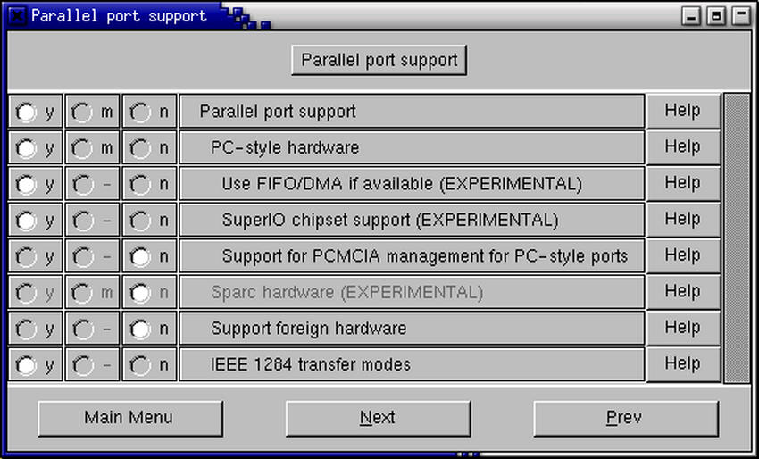 Figura 14.11. Le opzioni per la porta parallela per il kernel 2.4.5. |
14.16 Periferiche SCSI
14.16.1) Come funziona l'emulazione SCSI per la gestione delle periferiche IDE/EIDE/ATAPI?
L'emulazione SCSI è nata con uno scopo ben preciso, cioè quello di evitare di dover riscrivere i driver per le periferiche ed i programmi che già esistono per il protocollo SCSI (masterizzatori, lettori ZIP, ecc.). In pratica quello che viene effettuato al caricamento del modulo ide-scsi è la creazione di una catena SCSI virtuale dove vengono innestate tutte le periferiche connesse ad un'interfaccia IDE/EIDE che non hanno supporto nativo nel kernel caricato.
In pratica, se si compila come modulo il supporto per i CD-ROM ATAPI, il supporto per l'emulazione ide-scsi, ed il supporto per il CDROM SCSI, quello che accade è questo:
-
Se si carica il modulo IDE/EIDE del CD-ROM si otterrà il supporto IDE/EIDE per il CD-ROM;
-
se si carica il modulo ide-scsi e tutte le periferiche IDE/EIDE sono supportate da un qualche driver, allora sul bus SCSI virtuale non ci saranno periferiche;
-
se si carica il modulo ide-scsi e poi si carica il modulo scd (supporto CD-ROM SCSI), si otterranno invece tutti CD-ROM SCSI.
Se ad esempio si avesse la necessità, per qualche ragione, di avere a disposizione i dischi come SCSI invece che come IDE/EIDE/ATAPI, allora si dovrà rimuovere il supporto per i dischi IDE/EIDE e caricare il supporto per quelli SCSI.
14.16.2) Quale opzione del kernel bisogna selezionare se si possiede la scheda SCSI Adaptec 2904?
Si dovrà selezionare AIC7xxx(24).
|
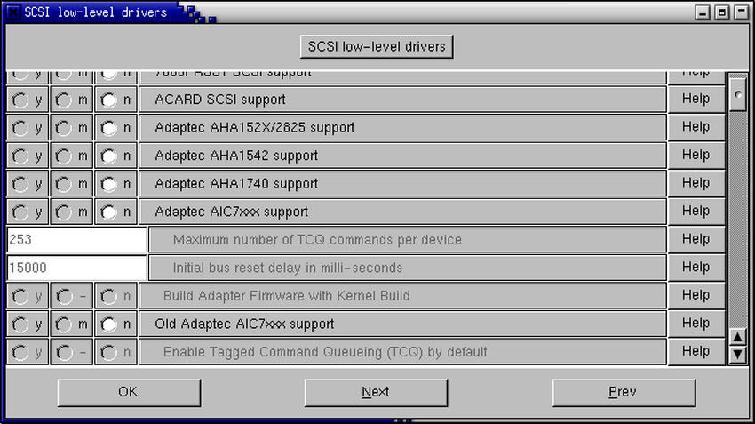 Figura 14.12. Le opzioni per i dispositivi Adaptec. |
Il modulo si inserirà con il seguente comando:
# modprobe aic7xxx[Invio]
14.16.3) Cosa si deve configurare per fare riconoscere al sistema il dispositivo SCSI Adaptec 1510A?
Qualora si disponga di una scheda SCSI Adaptec 1510A, si dovrà selezionare l'opzione Adaptec AHA 152X/2825 support come si può vedere in figura 14.12. Per automatizzare il caricamento del supporto per tale scheda, si dovrà inserire nel file /etc/lilo.conf la riga:
append="aha152x=0x340,11,7,1"
Questa opzione equivale a scrivere sul prompt di LILO. Occorre ricordare che in ogni caso si dovrà lanciare di nuovo il comando lilo:
# /sbin/lilo[Invio]
14.16.4) Cosa si deve configurare per fare riconoscere al sistema il dispositivo SCSI Adaptec 1505?
Qualora si disponesse di un controller Adaptec 1505, si dovrà scegliere, all'atto della compilazione del kernel, l'opzione Adaptec AHA 152X/2825 support.
|
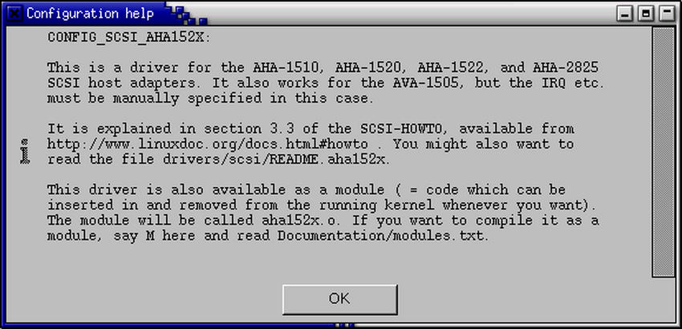 Figura 14.13. La descrizione dei dispositivi Adaptec AHA 152X/2825 support. |
Come si può rilevare dalla figura 14.16.4, il supporto per la scheda in questione esiste ma occorrerà specificare manualmente i valori. Si dovranno innanzitutto specificare all'interno del file /etc/conf.modules queste due righe:
options scsi_hostadapter aha152x=0x340,9,7,1,1 alias scsi_hostadapter aha152x
Il comando per inserire il modulo sarà:
# /sbin/modprobe aha152x.o aha152x=0x340,9,7,1,1[Invio]
14.16.5) Cosa si deve configurare per fare riconoscere al sistema il dispositivo SCSI Adaptec 152x?
Per questo tipo di controller si utilizzino le stesse informazioni contenute nella LDR 14.16.4.
Viene qui riportato lo schema dei ponticelli della scheda guardando la scheda con il pettine verso il basso:
alt j1 o o =140h-15fh o-o =340h-35fh i12 j2 o-o =irq12 i11 j3 o-o =irq11 i10 j4 o-o =irq10 i9 j5 o-o =irq9
Si ricordi che uno solo dei ponticelli j2-j5 deve essere chiuso. Se ad esempio si volesse l'IRQ 9 con indirizzo 340h, si dovrà chiudere j1 e j5 lasciando gli altri liberi.
|
Si deve in ogni caso controllare di non avere altre periferiche con lo stesso IRQ. |
Se al riavvio la scheda non è stata riconosciuta si dia il seguente comando direttamente da riga di comando:
# /sbin/modprobe aha152x.o aha152x=0x340,9,7,1,1[Invio](25)
14.17 Unità disco
14.17.1) Cosa si deve configurare per fare riconoscere al sistema un'unità LS-120 interna?
Qualora si disponesse di un lettore LS-120 interno (IDE/ATAPI) occorrerà assicurarsi di avere abilitato il supporto per ATAPI FLOPPY DRIVE nel kernel; dopo averlo fatto, lo si potrà innestare al file system come un disco fisso normale. Es.:
# mount -t vfat /dev/hdb /mnt/ls120[Invio](26)
14.18 Periferiche Plug & Play
14.18.1) Come si fa ad utilizzare periferiche Plug & Play in GNU/Linux?
Per gestire periferiche Plug & Play in GNU/Linux si dovrà utilizzare Isapnptools. Esso è composto da isapnp e pnpdump. A grandi linee pnpdump legge le varie porte delle periferiche Plug & Play (27) e restituisce dei valori che possono essere reindirizzati su un file.
isapnp andrà a leggere i valori da tale file per attivare la periferica (scheda audio, rete o altro). Ecco un esempio:
# pnpdump > isapnp.conf[Invio]
oppure con le ultime versioni:
# pnpdump --config > isapnp.conf[Invio](28)
Ecco un esempio per la scheda audio Yamaha OPL3-sax(29):
##### #/etc/isapnp.conf (READPORT 0x0203) (ISOLATE PRESERVE) (IDENTIFY *) (VERBOSITY 2) (CONFLICT (IO FATAL)(IRQ FATAL)(DMA FATAL)(MEM FATAL)) # or WARNING (CONFIGURE YMH0030/2156265473 (LD 0 [...] (ACT Y) )) (WAITFORKEY) ##########
A questo punto se il file è stato chiamato /etc/isapnp.conf come nell'esempio precedente, si utilizzerà isapnp:
# isapnp /etc/isapnp.conf[Invio]
A seguito dell'esecuzione di questo comando, si dovrebbero avere stringhe di conferma simili a:
ENABLED OK
|
Attenzione: prima di eseguire isapnp non ci devono essere caricati moduli audio. Verificare eventualmente controllando il contenuto del file |
14.19 Porte (seriale, parallela, PS/2, USB, ecc.)
14.19.1)
Come si ricreano i dispositivi /dev/ttyS0 e /dev/ttyS1?
Se si dovesse avere la necessità di ricreare i dispositivi seriali (/dev/ttyS0 e /dev/ttyS0) si dovranno impartire i seguenti comandi:
# cd /dev[Invio]
# mknod -m 600 ttyS0 c 4 64[Invio]
# mknod -m 600 ttyS1 c 4 65[Invio]
Eventualmente occorrerà ricreare il collegamento simbolico del mouse. Se ad esempio il mouse è connesso alla prima porta seriale(30), il comando sarà:
# ln -sf /dev/ttyS0 /dev/mouse[Invio]
14.19.2)
Come si ricrea il dispositivo /dev/dsp?
Il comando da utilizzare per ricreare tale dispositivo è:
# mknod -m 666 /dev/dsp c 14 3 [Invio]
14.19.3)
Perché il sistema dice che i dispositivi /dev/cuan sono obsoleti?
Qualora si cerchi di sostituire un kernel molto vecchio (in genere presente in distribuzioni datate) si può incorrere nella segnalazione che indica di possedere dispositivi seriali antiquati. In particolare si indica che i dispositivi /dev/cuan(31) sono obsoleti e si chiede di sostituirli con i dispositivi /dev/ttySn(32).
In questo caso non si dovrà fare altro che cambiare gli eventuali collegamenti simbolici del mouse e del modem.
14.19.4)
Come si ricrea /dev/null?
Il dispositivo /dev/null si ricrea con il comando:
# mknod -m 666 /dev/null c 1 3[Invio]
14.19.5)
Come si ricreano i dispositivi /dev/lp*?
Per ricreare i dispositivi /dev/lp0, /dev/lp1 e /dev/lp2:
# cd /dev[Invio]
# mknod -m 660 lp0 c 6 0[Invio]
# mknod -m 660 lp1 c 6 1[Invio]
# mknod -m 660 lp2 c 6 2[Invio]
# chown root.daemon /dev/lp*[Invio]
14.19.6) Come si possono individuare gli indirizzi di IRQ e di I/O?
Si possono ottenere queste informazioni visualizzando il contenuto dei file /proc/interrupts e /proc/ioports:
# cat /proc/interrupts[Invio]
[root@localhost]:[Sat Dec 16]:[11:43:06]:[~]:
--> cat /proc/interrupts
CPU0
0: 537659 XT-PIC timer
1: 24545 XT-PIC keyboard
2: 0 XT-PIC cascade
5: 13999 XT-PIC soundblaster
9: 20694 XT-PIC advansys, NE2000
12: 37941 XT-PIC PS/2 Mouse
13: 1 XT-PIC fpu
14: 192411 XT-PIC ide0
NMI: 0
ERR: 0
# cat /proc/ioports[Invio]
[root@localhost]:[Sat Dec 16]:[11:43:49]:[~]: --> cat /proc/ioports 0000-001f : dma1 0020-003f : pic1 0040-005f : timer 0060-006f : keyboard 0080-008f : dma page reg 00a0-00bf : pic2 00c0-00df : dma2 00f0-00ff : fpu 01f0-01f7 : ide0 0220-022f : soundblaster 02f8-02ff : serial(auto) 0330-0333 : MPU-401 UART 0378-037a : parport0 03c0-03df : vga+ 03f6-03f6 : ide0 03f8-03ff : serial(auto) 6800-681f : NE2000 6c00-6c0f : advansys f000-f007 : ide0 f008-f00f : ide1
1) XawTV GPL
2) per uscire occorre attendere 10 sec. senza premere alcun tasto
3) dalle prime lettere della tastiera in alto a sinistra sotto i numeri e a destra del carattere di tabulazione
4) dove tastiera.txt è il file che conterrà il risultato di dumpkeys.
5) l'autore non è riuscito a trovare all'interno della propria distribuzione questo file per cui non ha potuto verificare quanto di seguito riportato.
6) dove x assume valori come 1, 2, 3 o 4.
7) imwheel GPL
8) se invece il supporto è stato compilato in modo monolitico (Y) non sarà necessaria questo comando.
9) questo vale solo per le schede ISA, non per le PCI.
10) dove xxx indica la versione.
11) è possibile che la Creative Labs non fornisca più tali file vista la possibilità di gestire la scheda con la versione 2.4.x del kernel.
12) purtroppo capita spesso che alcune opzioni si trovano in altre sezioni, che abbiano cambiato nome o che siano state integrate da altre.
13) nei kernel non recentissimi presente nella sezione Additional low level sound drivers
14) occorrerà inserire i valori e gli indirizzi adeguati
15) occorrerà inserire i valori e gli indirizzi adeguati
16) occorrerà inserire i valori e gli indirizzi adeguati
17) se als100.conf è il file generato da Isapnptools che si era modificato apponendo i commenti.
18) inserire opportunamente i valori corretti degli indirizzi e delle altre impostazioni.
19) dove zip è la directory di innesto desiderata.
20) dove punto_innesto è la directory di innesto desiderata.
21) dove file e directory rappresentano la possibilità di indicare file e directory.
22) più precisamente definibili come modem software.
23) più precisamente definibili come modem software.
24) ci sono due versioni, una per i vecchi modelli
25) questo consente di accedere ad un'eventuale periferica rimovibile al momento opportuno anziché tenerla accesa fin da prima dell'avvio.
26) se si tratta di un lettore LS-120 installato come slave primario e contenente un supporto con file system vfat.
27) ammesso che la scheda madre gestisca le schede ISA Plug & Play
28) in questo secondo caso si ottiene un file già decommentato, nel primo invece occorrerà modificare a mano il file
29) il file riportato non è completo
30) COM1 di Dos
31) dove n è un numero che va da 0 a 3.
32) dove n è un numero che va da 0 a 3.